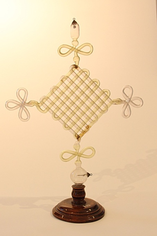

Tubo di Geissler
Scuola di provenienza: Liceo classico "P. Colletta", Avellino
Settore: Elettrologia
Costruttori: Sconosciuto
Materiali: Vetro, gas, legno
Accessori: Nessuno
Stato di conservazione: Buono
Descrizione: Lo strumento è costituito da un’ampolla in vetro contenente gas rarefatto. Nella parte superiore sono presenti due elettrodi, ai quali può essere applicata una differenza di potenziale per generare la scarica elettrica. All’interno dell’ampolla può essere presente una piccola quantità di minerale fluorescente. Il funzionamento si basa sul processo di ionizzazione del gas (e del minerale fluorescente quando presente) provocato dall’accelerazione degli elettroni liberi per mezzo di un campo elettrico e della loro successiva collisione con gli altri atomi del gas (e del minerale) in una sorta di effetto a valanga che crea il passaggio della corrente e un’intensa emissione luminosa. Questo tipo di tubo fu realizzato intorno al 1880 nelle forme più disparate quale oggetto di divertimento e rappresenta l’antenato dei moderni tubi al neon delle insegne luminose.